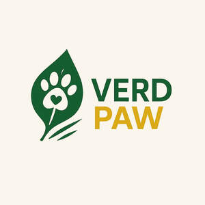

Trade Mark Journal No.2025/028 11 July 2025
UK00004228581 3 July 2025 (5,31)

- Class 5
- Dietary pet supplements in the form of pet treats; Dietary supplements for pets; Vitamin and mineral supplements for pets; Dietary supplements for animals; Vitamins for pets; Vitamin supplements for animals; Food supplements; Food supplements for veterinary use; Mineral dietary supplements for animals; Dietary supplements for pets in the nature of a powdered drink mix; Medicated supplements for animal feedstuffs; Nutritional supplements for veterinary use; Dietary food supplements; Dietary supplements; Homeopathic supplements; Antibiotic food supplements for animals; Protein supplements for animals; Medicated food supplements; Dietary supplements for humans; Nutritional supplements; Herbal supplements; Probiotic supplements; Flaxseed dietary supplements; Feed supplements for veterinary use; Mineral dietary supplements for humans; Food supplements for sportsmen; Nutraceuticals for use as a dietary supplement; Mineral dietary supplements; Anti-oxidant food supplements; Vitamin supplements; Liquid dietary supplements; Mineral supplements for feeding livestock; Vitamin and mineral food supplements; Medicated supplements for foodstuffs for animals; Nutritional supplements for livestock feed; Dietary supplements for infants; Calcium supplements; Chlorella dietary supplements; Dietary and nutritional supplements; Acai powder dietary supplements; Mineral nutritional supplements; Health food supplements made principally of vitamins; Propolis dietary supplements; Liquid nutritional supplements; Lecithin dietary supplements; Colostrum supplements; Dietary supplements consisting of vitamins; Protein dietary supplements; Zinc dietary supplements; Linseed dietary supplements; Vitamin preparations in the nature of food supplements; Protein supplements; Food supplements for dietetic use; Casein dietary supplements; Dietary supplements for medical use; Enzyme dietary supplements; Flaxseed oil dietary supplements; Calcium tablets as a food supplement; Liquid herbal supplements; Health food supplements for persons with special dietary requirements; Yeast dietary supplements; Pollen dietary supplements; Dietary supplements with a cosmetic effect; Attractants for pet animals; Albumin dietary supplements; Liquid vitamin supplements; Vitamin and mineral supplements; Prebiotic supplements; Dietary supplements in powder form; Protein powder dietary supplements; Health food supplements made principally of minerals; Herbal dietary supplements for persons special dietary requirements; Alginate dietary supplements; Food supplements for medical purposes; Anti-oxidant supplements; Food supplements in liquid form; Medicated shampoos for pets; Wheat dietary supplements; Dietary supplement drinks; Food supplements for non-medical purposes; Glucose dietary supplements; Whey protein dietary supplements; Dietary supplements for human beings and animals; Dog lotions for veterinary purposes; Dietary supplements for humans not for medical purposes; Soy protein dietary supplements; Health-aid foods supplements containing ginseng; Dietary supplements and dietetic preparations; Linseed oil dietary supplements; Fodder supplements for veterinary purposes; Nutritional supplements consisting primarily of magnesium; Dietary supplements consisting primarily of magnesium; Vitamin supplement patches; Soy isoflavone dietary supplements; Nutritional supplements consisting of fungal extracts; Nutritional supplements consisting primarily of calcium; Brewer's yeast dietary supplements; Folic acid dietary supplements; Dietary supplements consisting primarily of calcium; Nutritional supplements consisting primarily of zinc; Dietary supplements for controlling cholesterol; Nutritional supplements consisting primarily of iron; Dietary supplements and dietetic preparations containing CBD oil; Dietary supplements consisting primarily of iron; Dietary supplements promoting fitness and endurance; Nutritional supplement energy bars; Multivitamins; Dietary supplement drink mixes; Dietary food supplements used for modified fasting; Ganoderma lucidum spore powder dietary supplements; Activated charcoal dietary supplements; Zinc supplement lozenges; Fitness and endurance supplements; Natural dietary supplements for treating claustrophobia; Protein supplement shakes; Wheat germ dietary supplements; Vitamin supplements for use in renal dialysis; Royal jelly dietary supplements; Ground flaxseed fiber for use as a dietary supplement; Pine pollen dietary supplements; Diet capsules; Food supplements consisting of amino acids; Nutritional supplement meal replacement bars for boosting energy; Powdered nutritional supplement drink mix; Dietary supplements for human beings; Vitamins and vitamin preparations; Preparations for supplementing the body with essential vitamins and microelements; Health-aid foods supplement containing red ginseng; Capsules for medicines; Multi-vitamin preparations; Nutritional supplements made of starch adapted for medical use; Food supplements consisting of trace elements; Powdered nutritional supplement energy drink mix; Powdered fruit-flavored dietary supplement drink mix; Delivery agents in the form of coatings for tablets that facilitate the delivery of nutritional supplements; Preparations of vitamins; Antioxidant pills; Dietary supplemental drinks; Multivitamin preparations; Vitamin tablets; Anti-flea collars for pets; Diapers for pets; Disposable pet diapers; Pet odor neutralizer; Pet odour neutraliser.
- Class 31
- Pet foods; Pet food; Food (Pet -); Pet foodstuffs; Pet foods in the form of chews; Pet food for dogs; Pet beverages; Pet animals; Pet rabbit food; Foodstuffs for pet animals; Dog foods; Pet food for birds; Edible silvervine powder for pet cats; Pet birds; Edible pet treats; Dog food; Animal litter for cats; Cat food; Sand for pet toilets; Cat litter; Animal litter; Beverages for pets; Food for cats; Cat litter and litter for small animals; Pet treats in the nature of bully sticks.
BRAND BRIDGE INTERNATIONAL LIMITED